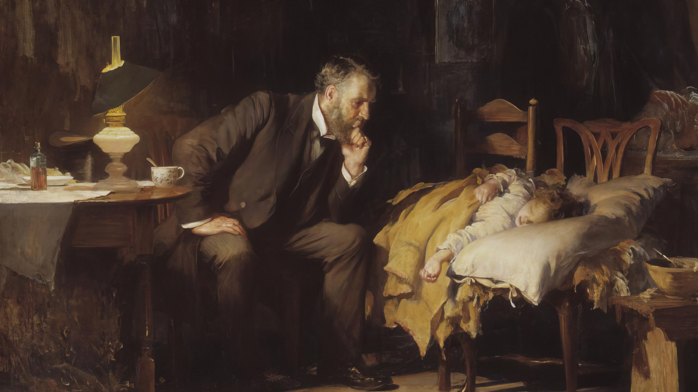

<!DOCTYPE html>
<html class="" style=""  lang="en">
  <head>
    <title></title>
    <meta charset="UTF-8">
    <meta name="viewport" content="width=device-width"/>
    <meta name="robots" content="none"/>

            <link
    rel="stylesheet" href="https://use.typekit.net/lcy4nos.css"> <!-- Grunticon loader -->
    <script src="../../assets/icons/grunticon.loader.js"></script>
    <script>
      grunticon([
        "../../assets/icons/icons.data.svg.css", "../../assets/icons/icons.data.png.css", "../../assets/icons/icons.fallback.css"
      ], grunticon.svgLoadedCallback);
    </script>
    <noscript><link href="icons.fallback.css" rel="stylesheet"></noscript>

    <link rel="stylesheet" href="../../assets/css/styles.css?1699385581" media="all"/>
    <link rel="stylesheet" href="../../assets/css/pattern-scaffolding.css?1699385581" media="all"/>

    <link rel="apple-touch-icon" sizes="180x180" href="../../assets/favicons/apple-touch-icon.png"/>
    <link rel="icon" type="image/png" href="../../assets/favicons/favicon-32x32.png" sizes="32x32"/>
    <link rel="icon" type="image/png" href="../../assets/favicons/favicon-16x16.png" sizes="16x16"/>
    <link rel="manifest" href="../../assets/favicons/manifest.json"/>
    <link rel="mask-icon" href="../../assets/favicons/safari-pinned-tab.svg" color="#46166b"/>
    <meta
    name="theme-color" content="#ffffff"/>

    <!-- Begin Pattern Lab (Required for Pattern Lab to run properly) -->
    <!-- never cache patterns -->
<meta http-equiv="cache-control" content="max-age=0" />
<meta http-equiv="cache-control" content="no-cache" />
<meta http-equiv="expires" content="0" />
<meta http-equiv="expires" content="Tue, 01 Jan 1980 1:00:00 GMT" />
<meta http-equiv="pragma" content="no-cache" />

<link rel="stylesheet" href="../../styleguide/css/styleguide.min.css?1699385581" media="all">
<link rel="stylesheet" href="../../styleguide/css/prism-typeahead.min.css?1699385581" media="all" />
    <!-- End Pattern Lab -->

  </head>
  <body class=""></body>
</html>
<!-- View All Patterns in a Pattern Sub-Type -->
<div class="sg-main" role="main">
  <!-- Patterns -->
  <div id="sg-patterns">
                  <div id="viewall-organisms-vc-scroll-zoom" class="sg-subtype">
  <h2>
    <a href="../../patterns/03-organisms-vc-scroll-zoom/index.html" class="patternLink" data-patternpartial="viewall-organisms-vc-scroll-zoom">
      vc scroll zoom
    </a>
  </h2>
  
  <div class="sg-pattern-body">
    
  </div>
</div>                        <div id="organisms-vc-scroll-zoom" class="sg-pattern">
  <div class="sg-pattern-head">
    <h3 class="sg-pattern-title">
      <a href="../../patterns/03-organisms-vc-scroll-zoom-vc-scroll-zoom/03-organisms-vc-scroll-zoom-vc-scroll-zoom.html" class="patternLink" data-patternpartial="organisms-vc-scroll-zoom" title="Link to Pattern">
        vc scroll zoom
        
              </a>
    </h3>
    
    <div class="sg-pattern-breadcrumb">
      
    </div>
    
    <a href="#" data-patternpartial="organisms-vc-scroll-zoom" title="View Pattern Info" id="sg-pattern-extra-toggle-organisms-vc-scroll-zoom" class="sg-pattern-extra-toggle">
      <span>&#9660;</span>
    </a>
  </div>
  
  <div class="sg-pattern-extra" id="sg-pattern-extra-organisms-vc-scroll-zoom"></div>
    
  <div class="sg-pattern-example">
    <div class="vc-scroll-zoom">
  <div class="vc-scroll-zoom__image-container">
    <div class="vc-scroll-zoom__image-blur">
      
    </div>
    <div class="vc-scroll-zoom__image">
      
    </div>
  </div>
  <div class="vc-scroll-zoom__captions vc-container">
          <div class="vc-scroll-zoom__caption ">
        <div class="vc-scroll-zoom__caption-desc vc-ethics-pattern">
          <p>One of the most recognized paintings of Western medicine, Luke Fildes’ The Doctor was hailed as an ideal representation of caring when it was first exhibited at the Royal Academy of Art in 1891. Henry Tate wanted an English painting worthy of a new gallery in his name, but he left the subject matter of his commission to Fildes.</p>
        </div>
      </div>
          <div class="vc-scroll-zoom__caption ">
        <div class="vc-scroll-zoom__caption-desc vc-ethics-pattern">
          <p>As witness to a doctor’s care of his son who died of typhoid fever, Fildes wanted to “put on record the status of the doctor.”<sup>1</sup> Fildes’ surviving son wrote that his father “must have thought a great deal on the subject for…. it was the easiest and quickest painted of his big pictures.”</p>
        </div>
      </div>
          <div class="vc-scroll-zoom__caption vc-scroll-zoom__caption--right">
        <div class="vc-scroll-zoom__caption-desc vc-ethics-pattern">
          <p>Light has long symbolized hope and wisdom and a table lamp provides the primary illumination in this otherwise dimly lit scene. At first glance, the doctor and his young patient seem to be the only figures present.</p>
        </div>
      </div>
          <div class="vc-scroll-zoom__caption ">
        <div class="vc-scroll-zoom__caption-desc vc-ethics-pattern">
          <p>Nearly centered in the painting, the child lies in a makeshift bed of <sup>2</sup> mismatched chairs. An outstretched left arm hangs over the pillow, signaling a certain precariousness of the moment. The doctor’s presence signals some hope that the child will recover.</p>
        </div>
      </div>
          <div class="vc-scroll-zoom__caption vc-scroll-zoom__caption--right">
        <div class="vc-scroll-zoom__caption-desc vc-ethics-pattern">
          <p>Not sitting tiredly despite a night vigil, the doctor is illuminated in a forward-leaning position, chin in his hand. His stare is not a casual gaze, but one that is intensely and diagnostically trained on the child.</p>
        </div>
      </div>
          <div class="vc-scroll-zoom__caption vc-scroll-zoom__caption--right">
        <div class="vc-scroll-zoom__caption-desc vc-ethics-pattern">
          <p>A fisherman’s net hardly visible in the rafters represents manual labor, presumably a means by which the father of the child supports his family. This labor is juxtaposed to the doctor’s intellectual and professional work, which apparently supersedes the power of manual labor and that of the child’s parents.</p>
        </div>
      </div>
          <div class="vc-scroll-zoom__caption ">
        <div class="vc-scroll-zoom__caption-desc vc-ethics-pattern">
          <p>The child’s parents recede into the background, reinforcing their helplessness to affect their child’s fate. A dawn light filtering through the window reveals the father comforting the mother, casting further uncertainty on their child’s immediate future.</p>
        </div>
      </div>
          <div class="vc-scroll-zoom__caption ">
        <div class="vc-scroll-zoom__caption-desc vc-ethics-pattern">
          <p>Despite the painting’s depiction, a doctor’s presence in a working-class home is more idealized than reality. During the Victorian era, such house calls were generally afforded to those with wealth and power.</p>
        </div>
      </div>
          <div class="vc-scroll-zoom__caption vc-scroll-zoom__caption--right">
        <div class="vc-scroll-zoom__caption-desc vc-ethics-pattern">
          <p>Prior paintings of the ill at home also never depicted a medical practitioner with a bottle of medicine, which was previously associated with only familial caregivers.<sup>3</sup> The content of this bottle is unknown, but it wasn’t a typhoid vaccine, since none existed until 1896.<sup>4</sup></p>
        </div>
      </div>
          <div class="vc-scroll-zoom__caption ">
        <div class="vc-scroll-zoom__caption-desc vc-ethics-pattern">
          <p>On the floor, 2 fragments of paper are probably the filled prescription for the medicine.<sup>5</sup> The torn and crumpled prescription suggests that the medicine has been dispensed, but its effect remains an open question.</p>
        </div>
      </div>
          <div class="vc-scroll-zoom__caption vc-scroll-zoom__caption--right">
        <div class="vc-scroll-zoom__caption-desc vc-ethics-pattern">
          <p>It is notable that the stethoscope, thermometer, and other advances of medical science are nowhere to be seen. Instead, a cup and spoon are the instruments presumably used to deliver medicine to the sick child.<sup>6</sup> Fildes seemed more intent on focusing our attention on the art than the science of medicine.</p>
        </div>
      </div>
          <div class="vc-scroll-zoom__caption ">
        <div class="vc-scroll-zoom__caption-desc vc-ethics-pattern">
          <p>Despite its idealized representation of doctoring or likely because of it, The Doctor struck a resonant chord with the public and profession alike. An engraved print of the painting sold more than 1 million copies in the United States. ”A library of books written in your honour would not do what this picture has done and will do for the medical profession in making the hearts of our fellow men warm to us with confidence and affection,” wrote a physician critic in 1892.<sup>7</sup></p>
        </div>
      </div>
          <div class="vc-scroll-zoom__caption ">
        <div class="vc-scroll-zoom__caption-desc vc-ethics-pattern">
          <p>Given its popular and professional appeal, The Doctor has been employed over the years to depict the practice of medicine in highly public and sometimes contradictory ways.</p>
        </div>
      </div>
      </div>
</div>

  </div>
  
  <script type="text/json" id="sg-pattern-data-organisms-vc-scroll-zoom" class="sg-pattern-data">
    {"lineage":[],"lineageR":[{"lineagePattern":"pages-vc-ethics-dark","lineagePath":"..\/..\/patterns\/05-pages-vc-ethics-dark\/05-pages-vc-ethics-dark.html"},{"lineagePattern":"pages-vc-ethics-light","lineagePath":"..\/..\/patterns\/05-pages-vc-ethics-light\/05-pages-vc-ethics-light.html"}],"patternBreadcrumb":{"patternType":"organisms","patternSubtype":"vc scroll zoom"},"patternDesc":"","patternExtension":"twig","patternName":"vc scroll zoom","patternPartial":"organisms-vc-scroll-zoom","patternState":""}
  </script>
</div><!--end .sg-pattern-->            </div> <!--end #sg-patterns-->
</div><!--end .sg-main--><!--DO NOT REMOVE-->
<script type="text/json" id="sg-pattern-data-footer" class="sg-pattern-data">
  {"patternPartial":"viewall-organisms-vc-scroll-zoom"}
</script>

<script>
  /*!
  * scriptLoader - v0.1
  *
  * Copyright (c) 2014 Dave Olsen, http://dmolsen.com
  * Licensed under the MIT license
  *
  */
  
  var scriptLoader = {
    run: function(js,cb,target) {
      var s  = document.getElementById(target+'-'+cb);
      for (var i = 0; i < js.length; i++) {
        var src = (typeof js[i] != 'string') ? js[i].src : js[i];
        var c   = document.createElement('script');
        c.src   = '../../'+src+'?'+cb;
        if (typeof js[i] != 'string') {
          if (js[i].dep !== undefined) {
            c.onload = function(dep,cb,target) {
              return function() {
                scriptLoader.run(dep,cb,target);
              }
            }(js[i].dep,cb,target);
          }
        }
        s.parentNode.insertBefore(c,s);
      }
    }
  }
</script>

<script id="pl-js-polyfill-insert-1699385581">
  (function() {
    if (self != top) {
      var cb = '1699385581';
      var js = [];
      if (typeof document !== 'undefined' && !('classList' in document.documentElement)) {
        js.push('styleguide/bower_components/classList.min.js');
      }
      scriptLoader.run(js,cb,'pl-js-polyfill-insert');
    }
  })();
</script>

<script id="pl-js-insert-1699385581">
  (function() {
    if (self != top) {
      var cb = '1699385581';
      var js = [ { 'src': 'styleguide/bower_components/jwerty.min.js', 'dep': [ 'styleguide/js/patternlab-pattern.min.js' ] } ];
      scriptLoader.run(js,cb,'pl-js-insert');
    }
  })();
</script>

<script src="../../assets/js/jquery-3.2.1.js"></script>
<script src="../../assets/js/drupal-attach-behaviors.js"></script>
<script src="../../assets/js/jquery.validate.js"></script>
<script src="../../assets/js/slick.min.js"></script>
<script src="../../assets/js/micromodal.min.js"></script>
<script src="../../assets/js/BeerSlider.unmin.js"></script>
<script src="../../assets/js/nav.js"></script>
<script src="../../assets/js/tool-drawer.js"></script>
<script src="../../assets/js/chosen.jquery.min.js"></script>
<script src="../../assets/js/filters.js"></script>
<script src="../../assets/js/sticky-share.js"></script>
<script src="../../assets/js/issueFilters.js"></script>
<script src="../../assets/js/poll-reveal.js"></script>
<script src="../../assets/js/lightbox.js"></script>
<script src="../../assets/js/resource-tooltips.js"></script>
<script src="../../assets/js/vc-page.js"></script>
<script src="../../assets/js/vc-header.js"></script>
<script src="../../assets/js/vc-hero.js"></script>
<script src="../../assets/js/vc-scroll-zoom.js"></script>
<script src="../../assets/js/vc-reaction-bar.js"></script>
<script src="../../assets/js/vc-video-tabs.js"></script>
<script src="../../assets/js/vc-slide-rule.js"></script>
<script src="../../assets/js/vc-hero-gallery.js"></script>
<script src="../../assets/js/vc-horizontal-gallery.js"></script>
<script src="../../assets/js/vc-featured-audio.js"></script>
<script src="../../assets/js/modernizr-custom.js"></script></body></html>
